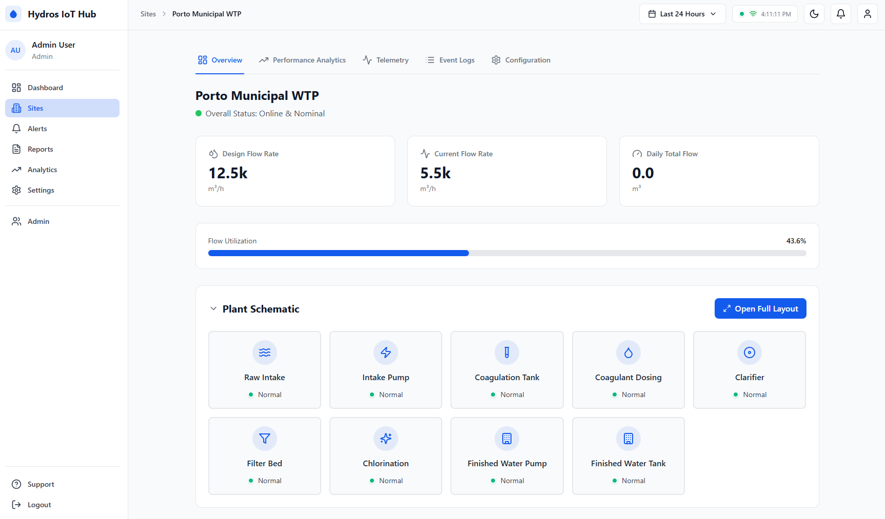
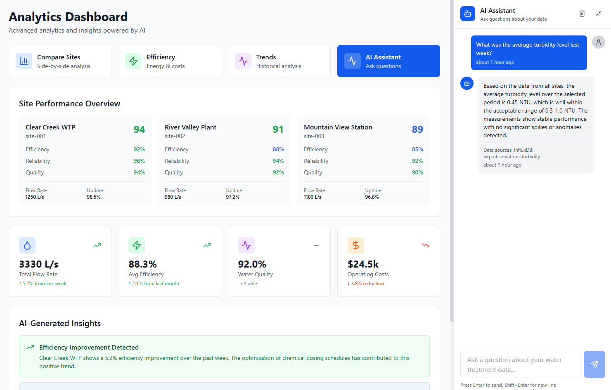
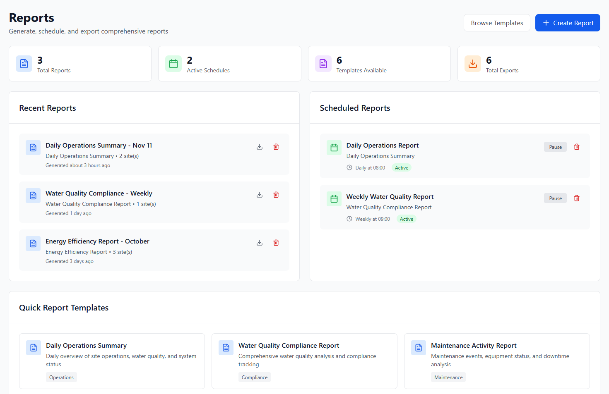
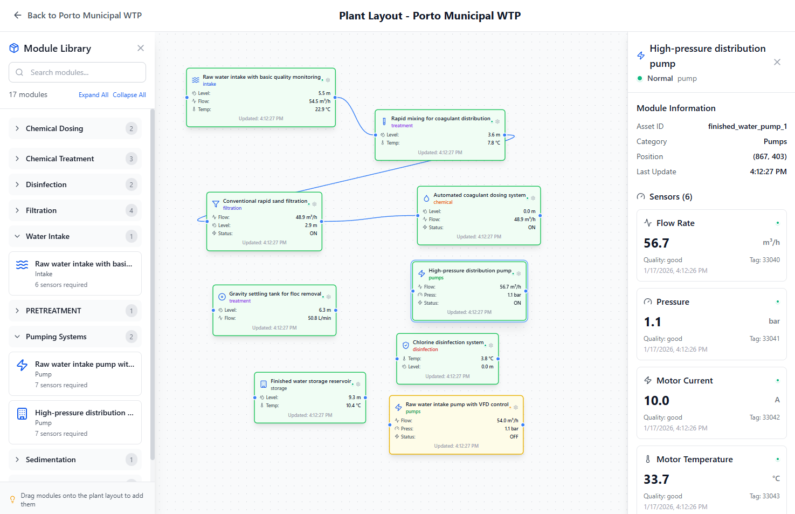

Scalable multi-site architecture for water treatment plant simulation and edge gateway functionality. Perfect for both development simulation and production data collection from real PLCs.

Everything you need to simulate, monitor, and manage water treatment plants at scale
Individual site configurations with centralized templates. Scale to unlimited sites without code changes.
Real-time digital representation of physical plant components with comprehensive state management.
Seamless integration with industrial protocols for maximum compatibility.
Production-ready gateway for collecting data from real PLCs and industrial equipment.
Monitor plant performance with comprehensive dashboards and time-series data.
Built for production with validation, logging, and comprehensive error handling.
Built with best practices for scalability and maintainability
flowchart TB
subgraph External["External Systems"]
PLC["PLC / Controllers"]
SCADA["SCADA Systems"]
end
subgraph Gateway["Edge Gateway"]
MB["Modbus Client"]
OPCUA["OPC UA Client"]
S7["S7 Client"]
end
subgraph Core["Digital Twin Core"]
DT["Twin Engine"]
PR["Protocol Registry"]
SM["State Manager"]
end
subgraph Data["Data Layer"]
MQTT["MQTT Broker"]
INFLUX["InfluxDB"]
end
subgraph UI["Frontend"]
DASH["React Dashboard"]
end
PLC --> MB
SCADA --> OPCUA
PLC --> S7
MB --> PR
OPCUA --> PR
S7 --> PR
PR --> DT
DT <--> SM
DT --> MQTT
MQTT --> INFLUX
MQTT --> DASH
SM --> DASH
Central orchestrator managing all plant components and real-time data with comprehensive state management
Pluggable protocol system with shared connection management and automatic address allocation
InfluxDB integration for efficient storage and retrieval of sensor observations and analytics
Real-time monitoring and control of water treatment plants

Monitor sensors, actuators, and system status in real-time with interactive dashboards

Visualize trends, analyze performance, and generate insights with AI-powered reports

Manage multiple plants with centralized templates and site-specific customizations
Deploy Hydros in minutes with Docker Compose and start monitoring your water treatment plants
# Clone the repository
git clone https://github.com/vitorbabo/hydros.git
cd hydros
# Docker compose (Recommended)
docker compose up -d --build